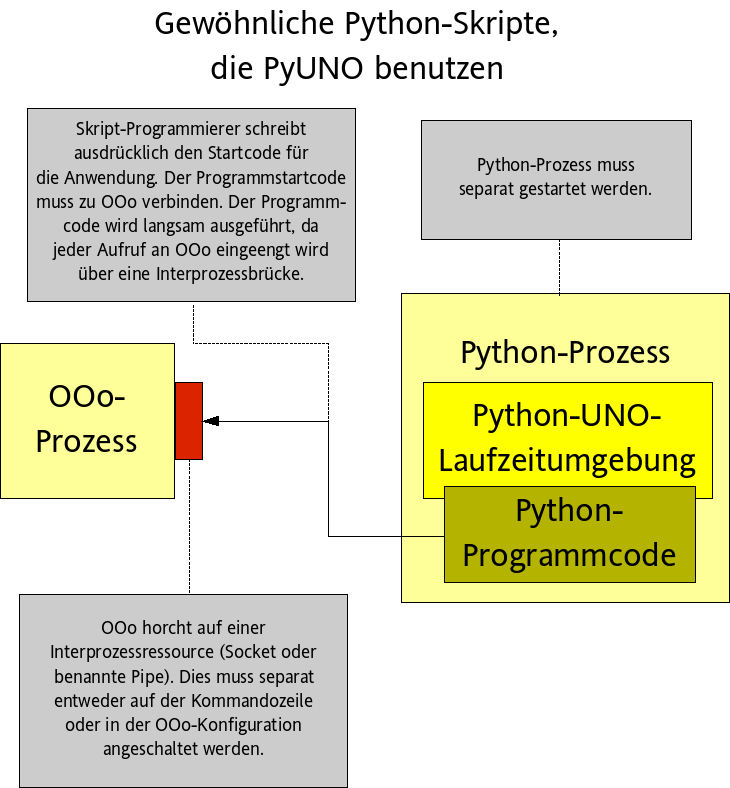
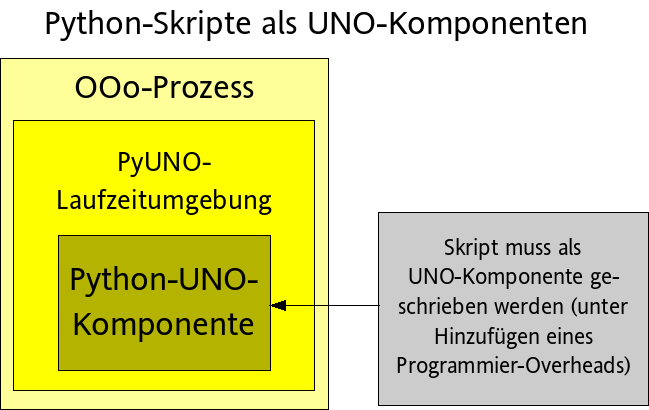

Die Python-UNO-Brücke von OpenOffice.org
- Einführung- Status
- Tutorial
-- PyUNO-Installation
-- PyUNO-Brücken-Modi
-- Mehr Beispiele
- UNO Sprachanbindung
-- UNO Typen-Mapping
-- UNO-Objekte implementieren
-- UNO-Komponenten implementieren
-- Umgang mit Ausgabeparametern
-- Umgang mit Exceptions
-- Aktuelle Kontext-Unterstützung (seit OOo 2.0.2)
-- Das unohelper-Modul
-- Logging (seit OOo 2.0.2)
- Abhängigkeiten
- Bootstrapping in Nicht-OOo-Umgebungen
- Ersetzen der Python-Laufzeitumgebung
- Regressiontests
- Externe Verweise
- Häufig gestellte Fragen (FAQ) (Lesen Sie dies ZUERST, wenn Sie Probleme haben)
- Bekannte PyUNO-Erweiterungen für OOo
- PyUNO braucht Sie
- Autoren
- Lizenz
Einführung
Die Python-UNO-Brücke erlaubt
- die Standard-OpenOffice.org-API von der sehr wohl-bekannten Python-Skriptsprache aus zu benutzen.
- UNO-Komponenten in Python zu entwickeln, so dass Python-UNO-Komponenten innerhalb des OpenOffice.org-Prozesses ablaufen können und aus Java, C++ oder der in OpenOffice.org enthaltenen Skriptsprache StarBasic aufgerufen werden können.
- das Erstellen und Aufrufen von Skripten mit dem Office-Skripting-Framework (OOo 2.0 und später).
Sie können die aktuellste Version dieses Dokuments unter http://udk.openoffice.org/python/python-bridge.html finden (englische Sprache).
Status
Die Python-UNO-Brücke ist komplett funktionfähig, aber sie ist noch nicht extensiv genutzt worden, so dass sie eventuell noch einige Fehler enthält. Sie ist nun in den OpenOffice.org-Quellcode-Baum integriert (OpenOffice.org 1.0.x wird nicht unterstützt.).
Die Dokumentation zielt in ihrem aktuellen Status auf Entwickler, die bereits einige Erfahrungen mit dem OpenOffice.org-API und mit einigen anderen Programmiersprachen (Java/C++/StarBasic) haben. Es ist empohlen, dass Sie einige Hintergrundinformationen aus dem Entwicklerhandbuch lesen, bevor Sie auf Besonderheiten von Python schauen.
PyUNO-Tuturial für OpenOffice.org
Dieses Tuturial zeigt, wie die PyUNO-Brücke benutzt werden kann, um OpenOffice.org zu automatisieren. Dies ist kein OpenOffice.org-Tuturial. Es sind eine Menge an Ressourcen in dem Office-Development-Kit und in dem Entwicklerhandbuch (in englischer Sprache) verfügbar.PyUNO-Installation
Seit OpenOffice 1.1 ist PyUNO in der Standardinstallation enthalten.PyUNO-Brücken-Modi
PyUNO kann in drei verschiedenen Modi benutzt werden:
- Innerhalb des OpenOffice.org-Prozesses mit dem Scripting-Framework (nur OOo 2.0 und später!!),
- Innerhalb einer ausführbaren Pythondatei (und außerhalb des OOo-Prozesses)

Benutzen Sie diesen Modus, wenn Sie- beginnen, PyUNO zu benutzen (da dies die unmittelbarere Herangehensweise ist).
- das Ausführen eines Skriptes durch das Starten eines seperaten Prozesses auslösen wollen (z.B. ein CGI-Skript innerhalb eines HTTP-Servers).
- die kürzesten Umlaufzeiten wollen (Programmieren - Ausführen - Programmieren - Ausführen ...)
Hallo Welt
Stellen Sie sicher, dass OpenOffice.org nicht läuft (beachten Sie, dass Sie auf Windows auch den Schnellstarter im Systemabschnitt am rechten unteren Rand des Desktops beenden müssen). Starten Sie eine System-Shell ( cmd auf Win NT/2000/XP, command auf Win9x, tcsh or bash auf Unix). Wechseln Sie in das OpenOffice.org-Programmverzeichnis (z.B. C:\Programe\OpenOffice.org1.1\program ) und starten Sie das Office mit den folgenden Kommandozeilenparametern
c:\Programe\OpenOffice1.1\program> soffice "-accept=socket,host=localhost,port=2002;urp;"
Falls OpenOffice.org nicht mit einem leeren Textdokument gestartet ist, wählen Sie im Menü Datei - Neu - Textdokument aus.
Benutzen Sie nun Ihren Lieblingstexteditor, um das folgende Beispielprogramm hello_world.py zu erstellen:
import uno # Die UNO-Komponente Kontext (Context) von der PyUNO-Laufzeitumgebunt holen localContext = uno.getComponentContext() # Die UnoUrlResolver erstellen resolver = localContext.ServiceManager.createInstanceWithContext( "com.sun.star.bridge.UnoUrlResolver", localContext ) # Zum laufenden Office verbinden ctx = resolver.resolve( "uno:socket,host=localhost,port=2002;urp;StarOffice.ComponentContext" ) smgr = ctx.ServiceManager # Das zentrale Desktop-Objekt holen desktop = smgr.createInstanceWithContext( "com.sun.star.frame.Desktop",ctx) # auf das aktuelle Writer-Dokument zugreifen model = desktop.getCurrentComponent() # auf die Eigenschaften des aktuellen Dokuments zugreifen text = model.Text # Schreibmarke (Cursor) erstellen cursor = text.createTextCursor() # Text in das Dokument einfügen text.insertString( cursor, "Hello World", 0 ) # Tun Sie eine unangenehme Sache, bevor Sie den Python-Prozess verlassen. Falls der # letzte Aufruf ein einseitiger Aufruf ist (sehen sie z.B. die idl-spec von insertString), # muss es aus dem Cache der Remote-Brücke herausgepresst werden, bevor Pyhton # den Prozess beendet. Andernfalls wird der einseitige Aufruf das Zielobjekt erreichen oder auch nicht. # Ich erledige dies hier mit einem billigen gleichzeitigen Aufruf (getPropertyValue). ctx.ServiceManager
Starten Sie nun das obige Skript mit dem Python-Skript, das sich im Programmverzeichnis (von OpenOffice.org) befindet
Note: Sie müssen die Skript-/Batch(BAT)-Datei im Programmverzeichnis benutzen, um Python zu starten. Das einfache Starten der ausführbaren Python-Datei im Verzeichnis der Laufzeitumgebung (oder dasjenige aus der Python-Installation irgendwo auf Ihrer Maschine) funktioniert nicht.c:\Programme\OpenOffice1.1\program> .\python hello_world.py
Dieses Skript schreibt "Hello World" in das aktuelle Writer-Dokument.
Innerhalb des OpenOffice.org-Prozesses

Benutzen Sie diesen Modus, wenn- Sie Ihren Programmcode leicht auf verschiedene andere Maschinen ausrollen wollen (unter Benutzen von UNO-Paketen)
- Ihre Skripte von UI-Ereignissen (UI=User Interface / Benutzerschnittstelle, Menü oder Symbolleisten) ausgelöst werden sollen
- Sie etwas Erfahrung mit PyUNO gesammelt haben
- Sie Ihre Skripte mit der besten Performance laufen lassen wollen
Hallo Welt
Das obige Hallo-Welt-Beispiel ist nun neu programmiert als UNO-Komponente, was bedeutet, dass der Programmcode, der das Einfügen erledigt, in eine Python-Klasse eingebettet werden muss. Zusätzlich muss der Programmcode für das Verbinden zum Office-Programmcode ersetzt werden durch einen eindeutigen Einsprungpunkt, der vom Python-Ladeprogramm benutzt wird, um die Python-Klasse zu instanzieren.hello_world_comp.py:import uno import unohelper from com.sun.star.task import XJobExecutor # Implementieren einer UNO-Komponente mittels Ableitens aus der Standardklasse unohelper.Base # und von der(den) Schnittstelle(n), die Sie implementieren wollen. class HelloWorldJob( unohelper.Base, XJobExecutor ): def __init__( self, ctx ): # Den Komponentenkontext für spätere Benutzung speichern self.ctx = ctx def trigger( self, args ): # Hinweis: args[0] == "HelloWorld", siehe unten die Konfigurationseinstellungen # Abrufen des Desktop-Objekts desktop = self.ctx.ServiceManager.createInstanceWithContext( "com.sun.star.frame.Desktop", self.ctx ) # Das aktuelle Dokumentenmodell holen. model = desktop.getCurrentComponent() # auf die Eigenschaften des Textdokuments zugreifen text = model.Text # Schreibmarke (Cursor) erstellen. cursor = text.createTextCursor() # Den Text in das Dokument einfügen. text.insertString( cursor, "Hello World", 0 ) # pythonloader schaut nach einer statischen Variable g_ImplementationHelper g_ImplementationHelper = unohelper.ImplementationHelper() # g_ImplementationHelper.addImplementation( \ HelloWorldJob, # UNO-Objekt-Klasse "org.openoffice.comp.pyuno.demo.HelloWorld", # implementationsname # Ändern Sie diesen Namen für Ihr eigenes # Skript ("com.sun.star.task.Job",),) # Liste von implementierten Diensten (services) # (der einzige Dienst)Der Programmcode muss mit einem Benutzerereignis verbunden werden. Dies kann kann z.B. mit den folgenden Konfigurationseinstellungen erledigt werden:
Addons.xcu:<?xml version="1.0" encoding="UTF-8"?> <oor:node xmlns:oor="http://openoffice.org/2001/registry" xmlns:xs="http://www.w3.org/2001/XMLSchema" oor:name="Addons" oor:package="org.openoffice.Office"> <node oor:name="AddonUI"> <node oor:name="AddonMenu"> <node oor:name="org.openoffice.comp.pyuno.demo.HelloWorld" oor:op="replace"> <prop oor:name="URL" oor:type="xs:string"> <value>service:org.openoffice.comp.pyuno.demo.HelloWorld?insert</value> </prop> <prop oor:name="ImageIdentifier" oor:type="xs:string"> <value>private:image/3216</value> </prop> <prop oor:name="Title" oor:type="xs:string"> <value xml:lang="en-US">Insert Hello World</value> </prop> </node> </node> </node> </oor:node>Beide Dateien müssen in ein einzelnes Zip-Archiv unter Verwenden Ihres Lieblings-Zip-Programmwerkzeuges, z.B. Infozip, gepackt werden.
zip hello_world.zip Addons.xcu hello_world_comp.py adding: Addons.xcu (deflated 55%) adding: hello_world_comp.py (deflated 55%)
Dieses Paket kann dann in einer OpenOffice.org-Installation unter Benutzen des Werkzeugs
pkgchk, das sich im OOo-Programmverzeichnis befindet, eingesetzt werden. Beachten Sie, dass das Office gestoppt worden sein muss, bevor das Paket installiert wird.Hinweis: Stellen Sie sicher, dass die Umgebungsvariable PYTHONPATH nicht gesetzt ist, wenn Sie pkgchk oder soffice starten (sehen Sie #i17339#). Dies mag es erfordern, dass Sie eine Batch-Datei (BAT) für soffice auf Windows erstellen, in der PYTHONPATH in der Systemkonfiguration auf Null gesetzt wird oder soffice immer aus einer Konsole mit dem Setzen von PYTHONPATH= (Windows) oder unsetenv PYTHONPATH (Unix tcsh shell) gestartet wird.
c:\Program Files\OpenOffice.org1.1\program> pkgchk hello_world.zip c:\Program Files\OpenOffice.org1.1\program>
Bei Erfolg erfolgt keine Ausgabe durch das Werkzeug. Wenn OpenOffice.org startet, gibt es einen neuen Eintrag im Menü (sehen Sie
Tools/Additional Components/Insert Hello World).
Mehr Beispiele
ooextract.py
Ein Kommandozeilenwerkzeug, das den Text, HTML- oder PDF-Inhalte aus einem Writer-Dokument auswählt und dies in eine andere Datei oder (optional) auf der Standardausgabe (stdout) ausgibt (Durchsuchen / grepen sie Ihre Office-Dokumente).oomerge.py
Ein Kommandozeilenwerkzeug, das ein neues Dokument erstellt durch das Anhängen von mehreren Einzeldokumenten.swriter.py
Ein Kommandozeilenprogramm, das ein Writer-Dokument mit etwas Text und Tabellen füllt.- swritercomp.py,
swritercompclient.py
Dasselbe wie oben, aber implementiert als Python-UNO-Komponente, so dass es innerhalb des Office-Prozesses läuft. Dies zeigt die Performance-Vorteile, Skripte zu haben, die innerhalb eines Prozesses laufen.Sie müssen das Programm swritercomp.py mit dem Werkzeug pkgchk (siehe unten) zur Office-Installation hinzufügen und können dann das Programm swritercomp_client.py benutzen, um es auszuführen.
biblioaccess.py
Ein Kommandozeilenprogramm, das den Inhalt der Bibliotheksbeispieldatenbank anzeigt, die mit OpenOffice.org mitgeliefert wird.- Ihre Beispiele (Bitte senden Sie mehr Beispiele ein, so dass sie hier hinzugefügt werden können).
UNO-Sprach-Bindung
Im Folgenden finden Sie eine komplette Beschreibung dazu, wie UNO-Funktionen auf die Python-Programmsprache abgebildet sind.UNO-Typen-Abbildung
| IDL-Datentyp | Darstellung in Python | |||
|---|---|---|---|---|
| integer types (byte, short, unsigned short, long, unsigned long, hyper, unsigned hyper |
Python kennt intern nur die C-Datentypen long und long long als Integertypen.
Auf den meisten Maschinen ist ein long ein 32-Bit-Wert während long long ein 64-Bit-Wert ist.
|
|||
| boolean | Python hat intern einen Datentyp Boolean, der abgeleitet ist vom Integer-Typ (siehe
http://python.org/peps/pep-0285.html ).
Es existieren die Singletons True und False,
welche PyUNO benutzt, um zwischen Integern- und Bool-Werten zu
unterscheiden.
Solange ein Bolean in der Schnittstellen-Methoden-Signatur spezifiziert ist, können Sie ebenso Integerwerte benutzen. In dem folgenden Beispiel sind alle Aufrufe gültig:
Wenn Sie allerdings ausdrücklich ein Boolean durchlaufen lassen wollen, wo nur irgendeiner spezifiziert ist, müssen Sie
Hinweis: Es existiert außerdem die Klasse uno.Bool, die seit PyUNO 0.9.2 nicht ausgeführt wurde, aber noch immer unterstützt wird. Benutzen Sie diese nicht mehr. | |||
| string | Im allgemeinen wird der String in einem Python-Unicode-String abgebildet. Allerdings können Sie auch dort einen 8-Bit-Python-String benutzen, wo ein UNO-String erwartet wird. Die Brücke konvertiert den 8-Bit-String in einen Unicode-String unter Anwendung des System-Locale.
|
|||
| char |
Ein char wird in einem
|
|||
| enum | Ein konkreter Enum-Wert wird durch eine Instanz der Klasse uno.Enum repräsentiert. Sie hat zwei Elemente: typeName ist ein String, der den Namen des Enum-Typs enthölt, und
value, das den Wert von Enum enthölt.
Sie können Enum-Werte auf zwei Wegen erzeugen:
|
|||
| type | Ein Type wird in einen uno.Type abgebildet. Es hat öffentliche Elemente typeName (string) und
typeClass (Enum-Wert von com.sun.star.uno.TypeClass).
Es existiert eine Funktion uno.getTypeByName(), um einfach eine Type-Instanz zu erstellen. Die Funktion endet in einer RuntimeException (Laufzeitfehler), falls der Type unbekannt ist.
Sie können konkrete Type-Werte auf zwei Wegen erzeugen:
|
|||
| struct (und exception) |
Für jedes UNO-Struct (oder exception), wird während der Übertragung eine neue Python-Klasse erzeugt. Es ist garantiert, dass es nur eine Instanz des Struct-(oder exception)Klasse pro Python-Interpreter-Instanz gibt. Die erzeugte Klasse spiegelt die Vererbungshierarchie des konkreten UNO-Type wieder (zum Beispiel wichtig für die Behandlung von exceptions/Ausnahmen; siehe unten).
Man kann eine Struct-Klasse unter Verwendung des Importmechanismus erzeugen. Eine Instanz eines Struct kann dann unter Verwendung des Python-Constructor instanziert werden. Der Constructor unterstützt O-Argumente (zero arguments) (Elemente werden mit Standards konstruiert): 1 argument which the same type (copy constructor), and n arguments, where n is the number of elements of the concrete struct. The struct supports the equality operator, two structs are equal, if they are of the same type and each member is equal. Beispiel:
uno.createUnoStruct() und der Name des Struct als erster Parameter und optional Konstruktionsargumente übergeben werden (sehen Sie oben nach einem Beispiel der möglichen ctors).
Achtung: In UNO haben Structs structs have value semantic, allerdings spiegelt die Behandlung in Python dies nicht wieder. Wenn ein Struct an eine Funktion übergeben wird, wird der Wert an den Angerufenen übergeben. Spätere Veränderungen der Struct-Instanz beeinflussen den Angerufenen nicht mehr. Allerdings das einfache Zuweisen eines Struct zu einer anderen lokalen Variable erzeugt keine Kopie, sondern erzeugt einfach eine Parallelbezeichnung (Alias) der ursprünglichen Instanz.
|
|||
| sequence | Eine Sequence wird im allgemeinen in einem Python-Tuple abgebildet. Eine Python-List wird nicht (!) akzeptiert.
Vorsicht (seit 0.9.2): Die IDL
|
|||
| constants | Ein UNO-IDL constant kann auf den folgenden Wegen vorgegeben werden:
|
|||
| any | Im allgemeinen kommt der Python-Programmierer nicht in
Berührung mit Any-Typen. Überall,
wo Any-Typen in der Methodensignatur erscheinen, kann der Python-Programmierer einfach einen
Concrete-Wert übergeben. Folglich enthalten Rückgabewerte oder
Out-Parameter auch niemals ein konkretes Any.
Allerdings gibt es bestimmte Fälle, in denen ein Python-Programmierer eventuell einen bestimmten Werttyp an einen Aufrufer übergeben will (Hinweis: dies ist nur möglich für 'bridged'-Aufrufe; sie können ein typisiertes Any nicht an ein anderes Python-UNO-Object übergeben). Sie können ein
Diese Anys können nur in Verbindung mit dem
sequence<short>.
Wenn obj ein lokales Python-Objekt ist, erhält es einfach den (4,5), wie es ihn mit einem normalen Aufruf
bekommen hätte.
HINWEIS: Es gibt aktuell einen Fehler in PyUNO (sehen Sie #i31159#), der es nicht ermöglicht, anys in structs einzufüllen (z.B. ein PropertyValue struct enthält ein any). Sie können eine provisorische Lösung hierfür mit dem folgenden Programmierbeispiel erstellen:
before(com.sun.star.beans.PropertyValue){ Name = (string)"TabStopPosition", Handle = (long)0x0, Value = (any){ (byte)0x64 }, State = (com.sun.star.beans.PropertyState)DIRECT_VALUE } after(com.sun.star.beans.PropertyValue){ Name = (string)"TabStopPosition", Handle = (long)0x0, Value = (any){ (long)0x64 }, State = (com.sun.star.beans.PropertyState)DIRECT_VALUE } |
Implementieren von UNO-Objekten
Man kann Python-Klassen benutzen, um ein UNO-Objekt zu implementieren. Instanzen einer Python-Klasse können dann als Argument an einen UNO-Aufruf übergeben werden, wo Any- oder Concrete-Schnittstellen vorgegeben werden.Um ein UNO-Objekt zu sein, MUSS eine Python-Klasse die Schnittstelle com.sun.star.lang.XTypeProvider implementieren durch Implementieren der zwei Methoden getTypes() und getImplementationId(), die die Python-Brücke informieren, welche konkreten UNO-Schnittstellen die Python-Klasse implementiert. Die Funktion getTypes() definiert, welche Schnittstelle in der Klasse implementiert ist.
Um dies einfacher zu machen, gibt es eine Klasse unohelper.Base, wovon
ein Python-UNO-Objekt abgeleitet sein sollte. Sie können dann eine UNO-Schnittstelle einfach durch Ableiten von der gewünschten Schnittstelle ableiten. Das folgende Beispiel implementiert einen com.sun.star.io.XOutputStream, der alle in das Stream geschriebenen Daten in einer ByteSequence speichert. (Beachten Sie, dass dies eine schwache Implementation ist, die einfach für Demonstrationszwecke erfolgt.).
import unohelper
from com.sun.star.io import XOutputStream
class SequenceOutputStream( unohelper.Base, XOutputStream ):
def __init__( self ):
self.s = uno.ByteSequence("")
self.closed = 0
def closeOutput(self):
self.closed = 1
def writeBytes( self, seq ):
self.s = self.s + seq
def flush( self ):
pass
def getSequence( self ):
return self.s
|
Implementieren von Python-UNO-Komponenten
Es gibt ein Ladeprogramm für Python-Komponenten. Es erlaubt, Instanzen von Python-Klassen nicht nur innerhalb des Python-Prozesses, sondern in jedem beliebigem UNO-Prozess einschließlich OpenOffice.org zu erstellen. Das Python-Ladeprogramm läd die Python-Laufzeitumgebung auf Anforderung, falls sie nicht bereit geladen ist, führt Python-Programmcode innerhalb des Haupt-Python-Interpreters aus.
Falls der Leser mit dem Komponenten-Registrierungsprozess nicht vertraut ist, sollte er das OpenOffice.org-Entwickler-Handbuch für eine umfassende Erläuterung konsultieren.
Das Python-Ladeprogramm unterstützt aktuell die folgenden Protokolle für eingehende URLs:
| Protokollname | Beschreibung |
|---|---|
| vnd.openoffice.pymodule | Der Protokoll abhängige Teil wird interpretiert als ein Python-Modulname,
der unter Verwendung des gewöhnlichen Python-Importmechanismus
(der die Umgebungsvariable PYTHONPATH benutzt) importiert worden ist.
Beispiel: Das vorgegebene Modul wird zu der Hashmap |
| file | Eine zwingend absolute Datei-URL zu einer Python-Komponentendatei.
Die Datei selbst muss nicht im PYTHONPATH enthalten sein, allerdings kann es nur Dateien importieren,
die im PYTHONPATH enthalten sind.
Das Modul ist nicht hinzugefügt zu sys.modules.
Beispiel: |
| vnd.sun.star.expand | Das Python-Ladeprogramm unterstützt den gewöhnlichen Makro-Expansionsmechanismus, wie die Java- oder C++-Ladeprogramme es tun.
Beispiel: |
Nachdem die Module importiert worden sind, schaut das Python-Ladeprogramm nach einer modul-globalen Variable mit dem Namen g_ImplementationHelper aus, die als Instanz von unohelper.ImplementationHelper erwartet wird.
Der folgende Beispielcode erstellt eine UNO-Komponente aus dem obigen UNO-Objekt
(beachten Sie, dass die Komponente nicht brauchbar ist, da es keine UNO-Methode gibt, um das Tuple abzurufen, und auch keine Dienstspezifikation von com.sun.star.io.OutputStream gibt. Es ist hier einfach ein Beispiel.)
import unohelper
from com.sun.star.io import XOutputStream
g_ImplementationHelper = unohelper.ImplementationHelper()
class TupleOutputStream( unohelper.Base, XOutputStream ):
# The component must have a ctor with the component context as argument.
def __init__( self, ctx ):
self.t = ()
self.closed = 0
# idl void closeOutput();
def closeOutput(self):
self.closed = 1
# idl void writeBytes( [in] sequence<byte>seq );
def writeBytes( self, seq ):
self.t = self.t + seq # simply add the incoming tuple to the member
# idl void flush();
def flush( self ):
pass
# convenience function to retrieve the tuple later (no UNO function, may
# only be called from python )
def getTuple( self ):
return self.t
# add the TupleOutputStream class to the implementation container,
# which the loader uses to register/instantiate the component.
g_ImplementationHelper.addImplementation( \
TupleOutputStream,"org.openoffice.pyuno.PythonOutputStream",
("com.sun.star.io.OutputStream",),)
|
regcomp -register -br types.rdb -br services.rdb -r services.rdb -c vnd.openoffice.pymodule:tuplestrm
Sie können natürlich auch das Werkzeug pkgchk benutzen, wie dies in dem Tuturial-Abschnitt erklärt ist, mit
pkgchk tuplestrm.py .
Beachten Sie allerdings, dass dieses Kommando eine Kopie der Datei erstellt (falls das Skript sich ändert, muss es unter Verwenden des obigen Kommandos neu eingesetzt werden).
Die Komponente kann auch von OpenOffice.org Basic mit
tupleStrm = createUnoService( "com.sun.star.io.OutputStream" ) tupleStrm.flush() |
instanziert werden.
Out-Parameter-Behandlung
UNO-Out-Parameter werden durch das Python-Mehrfachrückgabewertfähigkeit behandelt. Für reine Out-Parameter sollte ein Dummy-Wert None
als Platzhalter benutzt werden. Dies ist am besten mit einem Beispiel erläutert.
Lassen Sie uns annehmen, wir haben die folgende IDL-Methoden-Spezifizierung
long foo( [in] long first, [inout] long second, [out] third ) |
Ein Python-UNO-Objekt implementiert solch eine Methode auf dem folgenden Weg:
class Dummy( XFoo ):
def foo( self, first,second,third):
# Note: the value of third is always None, but it must be there
# as a placeholder if more args would follow !
return first,2*second,second + first
|
ret,second,third = unoObject.foo( 2, 5 , None ) print ret,second,third # results into 2,10,7 |
Dies unterstreicht auch, dass Out-Parameter ziemlich nahe an Mehrfachrückgabewerten (dabei geht die semantische Assoziierung eines Inout-Parameters verloren).
Beachten Sie jedoch, dass
- Sie die korrekte Anzahl der Rückgabewerte sowohl im Aufruf wie im implementierenden
Programmcode haben müssen, andernfalls erhalten Sie eine
RuntimeExceptionwährend des Aufrufs. - eine Void-Methode gibt immer ein
Nonezurück, gefolgt von möglichen Out-Parametern, weshalb Sie, wenn Sie eine Void-Methode mit einem Out-Parameter haben, die Ausgabe zwei Variablen zuweisen müssen (dabei wird die erste immer None sein). - ein Python-Objekt, das eine Void-Methode mit Out-Parametern implementiert, MUSS immer
Noneals ersten Parameter zurückgeben.
Ausnahmen-Behandlung
Die Python-UNO-Brücke benutzt die gewähnlichen Python-Mechanismen für die Ausnahmenbehandlung. Für jede UNO-Ausnahme wird eine konkrete Ausnahmen-Klasse während der Ausführung erzeugt (siehe Tabelle oben zur Typ-Abbildung für eine Erklärung wie dies gemacht wird).Beispiel für das Abfangen
from com.sun.star.uno import RuntimeException
from com.sun.star.lang import IllegalArgumentException
from com.sun.star.connection import NoConnectException
try:
uuresoler.resolve( "uno:socket,host=localhost,port=2002;urp;StarOffice.ComponentContext" )
except NoConnectException e:
print "The OpenOffice.org process is not started or does not listen on the resource ("+e.Message+")"
except IllegalArgumentException e:
print "The url is invalid ( "+ e.Message+ ")"
except RuntimeException e:
print "An unknown error occurred: " + e.Message
|
Beispiel für das Auswerfen
from com.sun.star.io import IOException
class TupleOutputStream(XOutputStream,unohelper.Base):
def writeBytes( self, seq ):
if self.closed:
raise IOException( "Output stream already closed", self )
self.t = self.t + seq
|
Unterstützung für aktuellen Kontext
NEU SEIT OOo 2.0.2PyUNO unterstützt das UNO-Aktueller-Kontext-Konzept. Es existieren die Funktionen uno.getCurrentContext() und uno.setCurrentContext( newContext ).
Ferner gibt es eine Klasse unohelper.CurrentContext. Der Konstruktor akzeptiert eine Hashmap mit Namen-/Werte-Paaren und dem ersteren Kontext für die Übertragung Muster für die Verwendung:
oldContext = uno.getCurrentContext()
try:
uno.setCurrentContext(
unohelper.CurrentContext( oldContext,{"My42":42}) )
# ... do some uno calls, which may interpret the "My42"
finally:
uno.setCurrentContext( oldContext )
|
UNOHelper-Modul
Das Modul unohelper.py enthält einige zusätzliche Funktionen/Klassen, die einfach mit PyUNO zu benutzen sind, jedoch nicht zwingend. Dieser Abschnitt listet einige der Funktionen von unohelper.py auf.
def systemPathToFileUrl( systemPath )
|
Gibt eine Datei-URL für einen gegebenen Systempfad zurück. Die meisten der OOo-API-Funktionen erwarten eine Datei-URL, während die Python-Laufzeitumgebungsfunktionen im allgemeinen nur mit Systempfaden arbeiten. Die Funktion wurde unter Verwendung der Kern-C-Funktion
osl_getFileUrlFromSystemPath() implemeniert.
|
def fileUrlToSystemPath( url ) |
Gibt einen Systempfad zurück (bestimmt vom System, auf dem der Python-Interpreter läuft). Die meisten OOo-Funktionen geben eine Datei-URL zurück, während die meisten Python-Laufzeitumgebungs-Funktionen einen System-Pfad erwarten. Die Funktion ist unter Verwenden der Kernfunktion osl_getSystemPathFromFileUrl() implementiert worden.
|
def absolutize( path, relativeUrl )
|
Gibt eine absolute Datei-URL von einer gegebenen zwingend absoluten Verzeichnis-URL und einer relativen Datei-URL zurück, die absolut oder relativ (was einschließt z.B. ../ Teile). Die Funktion wurde unter Verwendung der Kernfunktion osl_getAbsolutePathFromFileUrl() implementiert.
|
| def addComponentsToContext( toBeExtendedContext, contextRuntime, componentUrls, loaderName ) |
Diese Funktionen fügen ein Tuple von Komponenten-URLs zu dem
toBeExtendedContext hinzu unter Verwenden des contextRuntime, um das Ladeprogramm loaderName und einige andere Dienste zu instanziieren, die für diese Aufgabe benötigt werden. Nach Vervollständigen der Funktion können alle Dienste innerhalb diese Komponenten instanziiert werden, solange wie der toBeExtendedContext nicht bereit ist. Die Änderungen sind nicht dauerhaft vorgenommen.
|
def inspect( unoobject, file )
|
Gibt die Typinformation zu einem gegebenes UNO-Objekt in eine Datei aus (tatsächlich muss die Datei eine Instanz einer Klasse sein, die eine Schreib-Methode implementiert). Die Typinformation schließt den Implementationsnamen, unterstützte Dienste, unterstützte Schnittstellen, unterstützte Methoden und unterstützte Eigenschaften ein. |
Protokollierung
NEU SEIT OOo 2.0.2Die PyUNO-Brücke kann nun jeden Aufruf protokollieren, der über die Brücke zwischen Python und UNO läuft. Dies kann eine nützliche Hilfe sein, wenn Sie Ihren Programmcode debuggen oder profilieren müssen. Es gibt zwei Umgebungsvariablen, die die Protokollierung aktivieren:
| PYUNO_LOGLEVEL |
Gültige Werte sind
|
| PYUNO_LOGTARGET |
|
Abhängigkeiten
Dieser Abschnitt ist interessant für alle, die die PyUNO-Brücke unabhängig von OpenOffice.org benutzen wollen.
Im Unterschied zu der Java- oder C++-UNO-Bindung ist die Python-UNO-Bindung nicht vollständig. Sie benötigt die C++-Bindung und ergänzende Skript-Komponenten. Diese ergänzenden Komponenten befinden sich aktuell in den gemeinsam benutzten Bibliotheken typeconverter.uno, invocation.uno, corereflection.uno, introspection.uno, invocadapt.uno, proxyfac.uno, pythonloader.uno (auf Windows typeconverter.uno.dll,...; unix typeconverter.uno.so,...).
Oft werden auch die Komponenten für das Herstellen einer Interprozessverbindung benötigt. Dies sind die gemeinsam genutzten Bibliotheken uuresolver.uno, connector.uno, remotebridge.uno, bridgefac.uno.
Die Pfadumgebungsvariablen (LD_LIBRARY_PATH auf Unix, PATH auf Windows) müssen auf das Verzeichnis zeigen, wo die UNO-Kernbibliotheken, die oben aufgelisteten Komponenten und gemeinsam genutzten Bibliotheken von PyUNO gespeichert sind. (Auf Unix existieren zwei Dateien: libpyuno.so enthält den Programmcode und eine pyuno.so, die für den Import der systemeigenen Python-Module benötigt wird). Zusätzlich müssen die Python-Module uno.py, unohelper.py und pythonloader.py in einem Verzeichnis gespeichert sein, das in der Umgebungsvariable PYTHONPATH aufgelistet ist.
Bootstrappen von PyUNO von der ausführbaren Pythondatei
Wenn das UNO-Modul das erste Mal von einem beliebigen Python-Skript importiert wird, muss es einen richtig preparierten UNO-Komponenten-Kontext bootstappen. When the uno module gets first imported from an arbitrary python script, it must bootstrap a properly prepared UNO component context.
# bootstraps the uno component context import uno # retrieve the already bootstrapped component context unoContext = uno.getComponentContext() |
Da der Python-Programmierer nicht Parameter eingeben kann (und will), während ein Modul importiert wird, benutzt die Python-UNO-Bindung die Datei pyuno[rc|.ini], gespeichert neben der von PyUNO gemeinsam genutzten Bibliothek, um den UNO-Kontext zu bootstrappen (sehen Sie hierzu UNO-Bootstrap-Variablen-Konzept). Die Bootstrap-Variablen UNO_SERVICES muss auf eine Registry-Datei zeigen, in der die oben angegebenen Komponenten registriert wurden.
PYUNOLIBDIR ist eine besondere Bootstrap-Variable, die den Pfad zu den aktuell verwendeten gemeinsam genutzten Bibliotheken von PyUNO enthä. Beispiel:
# The bootstrap variable PYUNOLIBDIR will be set by the pyuno runtime library UNO_TYPES=$PYUNOLIBDIR/types.rdb UNO_SERVICES=$PYUNOLIBDIR/pyuno_services.rdb |
Wenn die obigen Voraussetzungen erfüllt sind, kann das Skript einfach gestartet werden mit
$ python myscript.py
Manchmal ist es vorzuziehen, die Bibliotheksnamen der verlangten Komponenten direkt in dem Skript aufzuführen, anstatt eine Registry zu präparieren
(beachten Sie jedoch, dass die oben erwähnten Bootstrap-Komponenten immer in der Registry registriert werden müssen).
Dies kann erreicht werden durch das Verwenden der Funktion
unohelper.addComponentsToContext(
toBeExtendedContext, contextRuntime, componentUrls, loaderName )
Beispiel:
import uno
import unohelper
localContext = uno.getComponentContext()
unohelper.addComponentsToContext(
localContext, localContext, ("streams.uno",),
"com.sun.star.loader.SharedLibrary")
pipe = localContext.ServiceManager.createInstanceWithContext(
"com.sun.star.io.Pipe", localContext )
pipe.writeBytes( uno.ByteSequence( "abc" ) )
ret,seq = pipe.readBytes( None, 3 )
|
Ersetzen der Python-Laufzeitumgebung durch diejenige Ihrer systemeigenen Pythoninstallation
OOo bringt standardmäßig die Python-2.2.2-Kernlaufzeitumgebung mit. Dies ist fein für die meisten Benutzer, aber einige Hacker (oder Linux-Distributoren) wollen eventuell die Laufzeitumgebung durch diejenige der systemeigenen Pythoninstallation ersetzen, welche eventuell mehr optionale Pakete enthölt, die sie in Python benutzen wollen.Das Ersetzen ist ein wenig kompliziert, allerdings benötigen sie nur ein installiertes Python und Office.
Windows
Auf Windows können Sie nur Python-2.2 benutzen. Falls Sie Python-2.3 verwenden wollen, müssen Sie das PyUNO-Modul mit Python-2.3 neu kompilieren (sehen Sie unten).
- Installieren Sie OpenOffice.org
- Installieren Sie Python-2.2
- Benutzen Sie Ihren Lieblingstexteditor (z.B. Notepad), um die Datei
OpenOffice.org/program/pythonloader.uno.ini zu öffenen und verändern Sie die Zeilen dort zu etwas wie
[Bootstrap] PYTHONHOME=file:///c:/python-2.3.4 PYTHONPATH=$PYTHONHOME/lib $ORIGIN
Die Pfadelemente müssen als absolute Datei-URLs eingegeben werden (Beachten Sie, dass Sie URL-Escape-Sequenzen benutzen müssen, z.B. ersetzen Sie Leerfelder mit einem %20). PYTHONPATH muss auf die Wurzel des Speicherplatzes der Python-Bibliothek und auf das OOo-Programm-Verzeichnis zeigen. Fügen Sie andere Bibliotheken, falls Sie diese benötigen, hinzu (getrennt durch ein Leerfeld). - Benennen Sie die folgenden Dateien und Verzeichnisse im Verzeichnis OpenOffice.org/program directory
irgendwie um (z.B. fügen Sie eine Nachsilbe .orig an)
- python.bat
- python22.dll
- python-core-2.2.2
- Starten Sie eine Konsole cmd und fügen Sie der Pfad-Variablen beides hinzu, zum Python-Heimatverzeichnis und zum Verzeichnis von OpenOffice.org/program.
- Fügen Sie der Umgebungsvariablen PYTHONPATH das Verzeichnis OpenOffice.org/program hinzu.
Linux
Auf Linux können Sie beides benutzen, Python-2.2 oder Python-2.3, aber falls Sie das letztere benutzen, erhalten Sie eine Warnung auf stderr (die Sie über die Versionsunverträglichkeit informiert), wenn Sie Python oder das Office starten. Um die Warnung zu vermeiden, müssen Sie PyUNO mit Python-2.3 neu erstellen (sehen Sie unten). Allerdings habe ich wegen der Versionsunverträglichkeit einige Schwierigkeiten festgestellt.
- Sie brauchen ein mit der Option --enable-shared konfiguriertes Python. Falls OOo und Python nicht mit demselben gcc-Kompiler erstellt worden sind, müssen Sie außerdem Python neu erstellen, da das Standard-Python einige ungünstige Schalter während des Verlinkens benutzt.
Um es neu zu erstellen tun Sie
LINKCC=gcc export LINKCC ./configure --enable-shared make su -c "make install"
- Wechseln Sie in das OpenOffice.org-Verzeichnis und verschieben Sie die Python-Laufzeitumgebung, die mit OOo ausgeliefert wird.
cd /path/to/openoffice.org/program mv libpython.so.2 libpython.so.2.orig mv python-core python-core.orig cp pythonloader.unorc pythonloader.unorc.orig ln -s /usr/local/lib/libpython2.3.so.1.0 libpython.so.2
- Fügen Sie das Verzeichnis office/program zu den Variablen LD_LIBRARY_PATH und PYTHONPATH hinzu.
-
Erstellen Sie die Datei pythonloader.unorc in dem Verzeichnis office/program.
[Bootstrap] PYTHONHOME=file:///usr/local PYTHONPATH=$PYTHONHOME/lib/python2.3 $ORIGIN
Die Pfadelemente müssen als absolute Datei-URLs eingegeben werden (Beachten Sie, dass Sie URL-Escape-Sequenzen benutzen müssen, z.B. ersetzen Sie Leerfelder mit einem %20). PYTHONPATH muss auf die Wurzel des Speicherplatzes der Python-Bibliothek und auf das OOo-Programm-Verzeichnis zeigen. Fügen Sie andere Bibliotheken, falls Sie diese benötigen, hinzu (getrennt durch ein Leerfeld).
Testen
Sie sollten nun in der Lage sein, das Python des Systems zu starten und 'import uno' einzutippen. Falls dies schön funktioniert, benutzen Sie pkgchk, um Ihr Skript anzuwenden, z.B. das obige swritercomp.py in OpenOffice.org (Tipp: Fügen Sie ein print sys.version hinzu). Falls die schön funktioniert, sollte Python auch in OpenOffice.org selbt gut funktionieren.Ich habe nur einige elementare Test durchgeführt, jedoch habe ich keine erheblichen Probleme feststellen können. Lassen Sie uns wissen, falls Sie einige haben.
Beachten Sie, dass das Bibus-Project ein erweitertes Python 2.2.2 mit einer wxPyton-/wx-Windows-Erweiterung für die grafische Benutzerschnittstelle (GUI) benutzt.
Neubauen von PyUNO
Sie müssen die OOo-Buildumgebung installieren, um dies zu tun. Ersetzen Sie in der Shell die Variable PYTHONPATH richtig, z.B.setenv PYTHONPATH /usr/local/lib/python2.3:.:/usr/local/lib/python2.3/lib-dynloadStellen Sie sicher, dass das systemeigene Python in der Pfadvariable ist. Erstellen Sie das Office (oder zumindest alle Komponenten, von denen PyUNO abhängt), aber lassen Sie die Python-Module weg. In den Python-Modulen selbst sollten Sie nur pyuno/source/module, pyuno/source/loader und pyuno/test erstellen. Lassen das Verzeichnis zipcore weg. Sie müssen die Dateien pyuno/source/module/makefile.mk und pyuno/source/loader/makefile.mk verändern. Ersetzen Sie die Zeile CFLAGS+= mit CFLAGS+=-I/usr/local/include/python2.3 und alle Vorkommen von -lpython mit -lpython2.3.
Falls der Test fein läuft, können Sie nun pyuno.so, libpyuno.so und pythonloader.uno.so in dem Office durch Ihre neu erstellten Version ersetzen.
Regressionstests
Sofern Sie Python oder PyUNO verändert haben, sollten Sie wenigstens den folgenden Regressiostest laufen lassen.- Testtool-Module bilden und laufen lassen
cd testtools/source/bridgetest/pyuno && dmake runtest
- Installationssets bilden und OpenOffice.org installieren.
- Starten Sie program/python und schreiben Sie
import uno
(sollte ohne irgendwelche Fehler funktionieren). - Starten Sie das Office und fügen Sie das pyuno_hello_world.zip von dem obigen pyuno-doc.zip unter Benutzen von Extras - Extension Manager hinzu.
- Starten Sie Extras - Makros - Makro ausführen - OpenOffice.org Macros - pythonSamples - TableSample - createTable
Externe Verweise
| Python-Homepage | http://www.python.org |
| Das OpenOffice.org-Komponentemodell | http://udk.openoffice.org |
| OpenOffice.org-Entwickler-Handbuch | http://api.openoffice.org/DevelopersGuide/DevelopersGuide.html |
Häufig gestellte Fragen (FAQ)
-
Warum bekomme ich den Fehler 'bus error', wenn ich das Skript hello-world auf Solaris starte?
Es scheint eine verfälschte Version von libpyuno.so in dem Installationsset von OpenOffice.org1.1.0 zu sein. Der Grund ist noch nicht klar, es mag entweder ein Fehler im PyUNO-Code oder ein Fehler beim Bauen sein. Bitte laden Sie libpyuno.so.gz herunter, um die OOo-1.1.0-Version damit zu patchen (wenden Sie diesen Patch nicht auf irgendeine andere Version als OOo 1.1.0 für Solaris Sparc an!). -
Warum bekomme ich einen Fehler 'SystemError: pyuno runtime is not initialized, ...', wenn ich das Skript starte?
- PyUNO wurde nicht korrekt installiert (OO1.1RC2 und früher, repariert mit RC3). Bitte prüfen Sie
<openoffice-install>/program $ ls -c1d py*pyunorc pythonloader.py pythonloader.unorc python python.sh python-core python-core-2.2.2 pythonloader.uno.so pyuno.soUnter bestimmten Umständen könnte es passieren, dass die folgenden ini-Dateien fehlen:pyunorc (or pyuno.ini on windows):
[Bootstrap] UNO_TYPES=$ORIGIN/types.rdb UNO_SERVICES=$ORIGIN/services.rdb
pythonloader.unorc (oder pythonloader.unorc auf Windows):
[Bootstrap] PYTHONHOME=$ORIGIN/python-core PYTHONPATH=$ORIGIN/python-core/lib $ORIGIN/python-core/lib/lib-dynload $ORIGIN
Schneiden Sie diese einfach aus und fügen Sie sie in einen Texteditor ein, um sie zu erstellen.
- Es wurden einige Fehler mit der obigen Fehlermeldung berichtet, die bisher noch nicht aufgelöst worden sind. Sie wollen eventuell dem #i17339# folgen.
- PyUNO wurde nicht korrekt installiert (OO1.1RC2 und früher, repariert mit RC3). Bitte prüfen Sie
-
Warum bekommen ich einen Fehler 'SystemError: _PyImport_FixupExtension: module pyuno not loaded', wenn ich das Skript starte?
Dies passiert hauptsächlich, wenn Sie immer noch die System-Python-Installation starten. OpenOffice.org bringt eine Python-Installation mit (da Python und das Office mit der identischen Compiler-Version erstellt sein müssen). Bitte prüfen Sie dies mit 'which python'. Benutzen Sie einfach OpenOffice.org's Python mit dem absoluten Pfadnamen, zum Beispiel /usr/local/OpenOffice.org1.1/program/python meinskript.py. -
Warum bekomme ich einen Fehler "error: python-loader:'No module named pythonloader'", wenn ich pkgchk mit einer Python-Komponente laufen lasse?
Stellen Sie sicher, dass die Umgebungsvariablen PYTHONPATH und PYTHONHOME (die Sie eventuell gesetzt haben, da Sie eine anderes Python auf Ihrem System installiert haben) geleert worden sind, bevor soffice UND pkgchk gestartet werden. Dies ist eine provisorische Läsung. Wir denken gerade über eine bessere Lösung nach. -
Warum bekomme ich eine Fehlermeldung 'msvcr70.dll or python22.dll not found', wenn ich Python starte?
Sie versuchen wahrscheinlich Python aus der exe und nicht mit der BAT-Stapeldatei zu starten, zum Beispiel:
(oder: Warum erhalte ich einen Fehler 'error while loading shared libraries: libstdc++.so.x' ? )
c:\Programme\OpenOffice.org1.1\program\python-runtime\bin\python.exe.
Allerdings müssen Sie benutzen: c:\Programme\OpenOffice.org1.1\program\python.bat. -
Warum erhalte ich 'PYTHONPATH=... is not an identifier', wenn ich Python starte?
Dies ist ein Fehler im dem Python-Skript, der mit älteren Bash-Shells auftritt. Benutzen Sie einfach den Texteditor, um die folgenden Zeilen in dem Skript OOo-Installation/program/python.sh zu ändern
export PYTHONPATH="$sd_prog":"$sd_prog/python-core/lib":"$sd_prog/python-core/lib/lib-dynload":"$PYTHONPATH" export PYTHONHOME="$sd_prog"/python-core
zu
PYTHONPATH="$sd_prog":"$sd_prog/python-core/lib":"$sd_prog/python-core/lib/lib-dynload":"$PYTHONPATH" export PYTHONPATH PYTHONHOME="$sd_prog"/python-core export PYTHONHOME
Dieser Fehler ist beseitigt mit OOo 1.1.1.
-
Ich habe auf meinem System bereits Python installiert. Warum bringt das Office ein anderes Python mit?
Python selbst wird von OpenOffice.org mitgeliefert, da
- Python mit demselben C++-Kompiler wie das Office selbst auf allen Plattformen, die den gcc-Kompiler verwenden (z.B. Linux, BSD etc.) kompiliert worden sein muss.
- auf den meisten Unix-Plattformen keine gemeinsam genutzten (shared) Bibliotheken für Python standardmäßig verfügbar sind (obwohl einige Distributionen dies machen). Dies würde bedeuten, das Python-UNO-Komponenten nicht innerhalb des Office-Prozesses ausgeführt werden könnten.
- Python-Komponenten-Entwickler eine garantierte Mindestplattform benötigen, auf die sie sich verlassen können.
- Wiedererkennen einer Python-Laufzeitumgebung am Installationssystem eine extrem schwierige und zeitaufwändige Aufgabe wäre, wegen der existierenden vielen unterschiedlichen Python-Installationsschemen.
- Packetierer von OpenOffice.org werden Ihre eigenen Pakete erstellen, zum Beispiel für Redhat oder Debian ohne Python. Die Standarddistribution muss auf Systemen aus dem unteren Bereich laufen.
-
Kann ich die System-Python-Installation benutzen?
Sehen Sie hier. -
Warum lässt meine UNO-Komponente OpenOffice.org abstürzen, während die Beispiel-UNO-Komponente ausgezeichnet startet?
Es gibt einen bekannten Fehler im Office. Sehen Sie sich #i13377# an, der für OpenOffice.org 1.1 nicht behoben worden ist. Das Office stürzt gewöhnlich ab, wenn ein Python-Skript zu einer unbehandelten Ausnahme (zum Beispiel einem Attribut-Fehler) führt.Sie können versuchen eine provisorische Lösung für diesen Fehler zu finden, indem Sie ein
try: except:Level in Ihrer Umsetzung von trigger() hinzufügen, das eine Fehlermeldung an stdout/stderr ausgibt. Allerdings hilft dies leider nicht in allen Föllen (zum Beispiel Fehler beim Kompilieren aus manchen Gründen; bitte folgen Sie dem Issue für weitere Informationen).Es mag andere Gründe für einen Absturz geben, die Sie nur erkennen werden, wenn Sie versuchen, einen systemeigenen Callstack abzurufen (zum Beispiel unter Verwenden des gdb).
Warum funktionieren bei mir der Python-XML-Parser (expat) oder das Zip-Modul nicht?
Diese Bibliotheken sind noch nicht in OOo 1.1 eingebaut. Dies wird sich mit OOo 2.0 ädern. Alternativ können Sie den XML-Parser-Dienst von OpenOffice.org (sehen Sie sich service com.sun.star.xml.sax.Parser an) oder den Zip-Kontent-Provider (sehen Sie sich http://ucb.openoffice.org an) benutzen.Warum funktionieren Socket und Sre-Module nicht in der Python-Distribution von OOo1.1. auf Windows?
Dies ist ein bekannter Fehler auf Windows in dem OOo-1.1-Build. Dieser sollte in OOo1.1.1 beseitigt sein (sehen Sie sich den Issue 21281 an ). Es sollte auf den anderen Plattformen funktionieren. Sie können eine provisorische Lösung erreichen, indem Sie die offizielle Windows-Python-Distribution (schauen Sie auf http://www.python.org) herunter laden und die *.pyd-Dateien der OOo-Python-Installation durch die entsprechenden aus dem heruntergeladenen Paket ersetzen.-
Die Beispiele laufen ausgezeichnet, aber wie bekomme ich weitere Informationen über die API?
Die Semantik der OpenOffice.org-API ist ein sehr kompliziertes Thema, die nicht in diesem Python-Dokument behandelt werden kann. Versuchen Sie sich Informationen aus anderen Quellen zu beschaffen, insbesondere aus dem Entwicklerhandbuch (schauen Sie unten). -
Die meisten Beispiele im Developerguide sind in Java. Wie übersetze ich diese in Python-Programmcode?
Der meiste Beispiel-Programmcode, den Sie dort finden können, ist in Java geschrieben. Es ist einfach Java-Programmcode in Python zu übersetzen, wenn Sie die folgenden Unterschiede kennen:In Python brauchen Sie nicht
queryInterface. Folgendes im Java-Programmcode zum BeispieloInterface = (XInterface) oMSF.createInstance( "com.sun.star.frame.Desktop" ); oCLoader = ( XComponentLoader ) UnoRuntime.queryInterface( XComponentLoader.class, oInterface ); PropertyValue [] szEmptyArgs = new PropertyValue [0]; aDoc = oCLoader.loadComponentFromURL( "private:factory/swriter" , "_blank", 0, szEmptyArgs );wird in Python einfach zu
oCLoader = oMSF.createInstance( "com.sun.star.frame.Desktop" ) aDoc = oCLoader.loadComponentFromURL( "private:factory/swriter", "_blank", 0, () )Sie brauchen diese Zwischenvariable oInterface nicht mehr. Daher vereinfacht der Python-Programmcode das Beispiel sehr. Mit ein wenig Fachausbildung sollten Sie nicht allzu viele Probleme mit dem Übersetzen von Java- in Python-Programmcode haben.
-
Warum kann ich nicht die Methode print aufrufen?
In Python ist 'print' ein statement / Anweisung. Dies bedeutet einfach, es gibt dort keinen Weg, eine Variable, Methode oder sonst etwas mit diesem Namen. So funktioniert beispielsweise der Programmcode unten nicht:doc = desktop.loadComponentFromURL(infileurl, "_blank", 0, ()) doc.storeAsURL(outfileurl, ()) doc.print(())Sie können eine Hilflösung für dieses Problem erhalten, indem Sie die Funktionuno.invoke()wie unten benutzen:uno.invoke(doc, "print", ((), )) -
Warum kann ich nicht ein Ersetzen auf dem Objekt 'NumberingRules' durchführen?
Es gibt einige Plätze, an denen der Verlust in Typsicherheit zu Problemen führt, wie dieser Issue zeigt: //issues/show_bug.cgi?id=12504. Das Problem hier ist, dass die C++-Implementation in dem Office eine
sequence< PropertyValue >erwartet, während die PyUNO-Laufzeitumgebung es zu einersequence< any>konvertiert, wo jedesanyeinePropertyValueenthält. In meinen Augen ist dies ein Fehler in dem C++-Programmcode. Allerdings gibt es hier eine provisorische Lösung für PyUNO, die der Python-Skripter benutzen kann. Sehen hierzu das Beispiel unten:import uno import unohelper localContext = uno.getComponentContext() resolver = localContext.ServiceManager.createInstanceWithContext( "com.sun.star.bridge.UnoUrlResolver", localContext) ctx = resolver.resolve( "uno:socket,host=localhost,port=2002;urp;StarOffice.ComponentContext") smgr= ctx.ServiceManager desktop = smgr.createInstanceWithContext("com.sun.star.frame.Desktop",ctx) doc = desktop.loadComponentFromURL("private:factory/swriter", "_blank", 0, ()) style = doc.createInstance("com.sun.star.style.NumberingStyle") family = doc.getStyleFamilies().getByName('NumberingStyles') family.insertByName('List test', style) rule = style.getPropertyValue('NumberingRules') level = rule.getByIndex(0) # the normal call would have been: # rule.replaceByIndex( 0, level ) # but this will end up in a exception # magic to pass the exact type to the callee uno.invoke( rule , "replaceByIndex", (0, uno.Any("[]com.sun.star.beans.PropertyValue",level)) )Dies ist der einzige Platz, wo die uno.Any benutzt wird. Das Verwenden der uno.Any in normalen Aufrufen wird zu RuntimeExceptions führen. Eine Python-UNO-Objekt-Implementation wird niemals eine Instanz von uno.Any() als eingehenden Parameter empfangen, stattdessen wird immer den Wert des übergeben.
Diese Lösung sieht wirklich häßlich aus, aber es erlaubt Ihnen fortzufahren, wo Sie andererseits nur aufgeben oder eine andere Implementation der Sprache benutzen könnten.
-
Wie kann ich Codierung iso8859-1 für die Python-Installation von OpenOffice.org aktivieren?
Legen Sie eine Datei mit dem Namen sitecustomize.py irgendwo in Ihren PYTHONPATH, die folgendes enthält:import sys sys.setdefaultencoding('iso8859-1')(oder irgendeine andere Codierung, die Sie wünschen). Beachten Sie allerdings, dass dies überlicherweise keine so gute Idee ist. Es wäre viel sauberer, die notwendigen Umschlüsselungen ausdrücklich im Programmcode vorzunehmen, zum Beispiel durch Verwenden von Unicode(x, 'iso8859-1').
Bekannte PyUNO-Erweiterungen für OpenOffice.org
Die hier gelisteten Pakete können als Demonstration dafür dienen, was mit PyUNO möglich ist. Lassen Sie mich wissen, falls Sie Kenntnis von anderen Erweiterungen erhalten, die PyUNO benutzen.
| Title | Link |
|---|---|
| PyOOoBib - Das wird Bibliothekskataloge über das Internet nach bibliographischem Unterlagen durchsuchen. Sie können Unterlagen auswählen und sie zu Ihrer Literaturdatenbank hinzufügen. | http://bibliographic.openoffice.org/servlets/NewsItemView?newsItemID=168 |
| Thessalonica - Ein Werkzeug, um die Unterstützung für mehrere Sprachen in OOo zu verbessern | http://www.thessalonica.org.ru/en |
| Bibus bibliographische Software | http://bibus-biblio.sourceforge.net/ |
| oood.py - Ein Dienstprogramm im Hintergrund (daemon) für OpenOffice.org | http://udk.openoffice.org/python/oood/index.html |
| pyXray - Debugging-Werkzeug, um UNO-Objekte mit Hilfe der Office-Werkzeuge darzustellen | http://www.indesko.org/en/downloads |
| Ponto - Eine Wrapper-Schicht um ein Writer-Dokument herum | http://www.ham.nw.schule.de/pub/bscw.cgi/0/73468 http://ddi.cs.uni-dortmund.de/projekte/ponto |
PyUNO braucht Sie!
PyUNO wird zur Zeit (und wird dies auch in Zukunft) von mir in meiner Freizeit gepflegt.
Mein Hauptziel für PyUNO besteht darin, eine gute Integration des OpenOffice.org-Komponenten-Modells in Python bereit zu. Einige Mitstreiter auf dev@udk.openoffice.org erwarten, eine noch funktionsreichere Python-Laufzeit in OpenOffice.org und eine Integration mit der Pythoninstallation des Systems zu haben. Obwohl dies eine verständliche Forderung ist, ist es nicht einer meiner bevorzugten Arbeitsthemen und es bringt auch eine Menge Arbeit mit sich. Da ich außerdem Zeit für das Erstellen eines Postgresql-Treibers für OpenOffice.org aufwende, bleibt einfach keine Zeit mehr über für diese Aufgabe.
Deshalb suche ich nach anderen Freiwilligen wie zum Beispiel Sie, um diese Lücke zu füllen. Für den Fall, dass Sie interessiert sind, lassen Sie mich dies über die Mailingliste dev@udk.openoffice.org wissen oder schicken Sie mir privat eine E-Mail.
Ich sehe zur Zeit die folgenden Hauptaufgaben:
| Aufgabe | Beschreibung | "Haupt-Herausforderungen" | |
|---|---|---|---|
| Anheben der OOo-Python-Version auf das aktuelle Python-Release |
OOo nutzt aktuell Python 2.2.2 mit OOo 1.1.x und Python 2.3.4, das bereits ziemlich alt ist. Jemand, der dies tut, wird hauptsächlich Zeit für den OpenOffice.org-Build-Baum aufbringen müssen, wo die Python-Tar-Archive entpackt, gepatcht und gebaut werden. Dies ist eine sehr plattform-abhängige Aufgabe, typischer Weise für Mac OS X werden Sie eine Menge von Patches anwenden müssen. |
Kenntnisse über das Erstellen von OOo, aktuelle OOo-Python-Patche auf die aktuelle Python-Version portieren, das Erstellte für sowohl Windows- als auch Unix-Plattformen pflegen | |
| Hinzufügen der Unterstützung für die Zlib-Bibliothek (und mehr ...) | Aktuell wird das Python von OOo ohne diese Bibliotheken ausgeliefert, die von Python-Benutzern stark vermisst werden. Idealerweise sollten sie die Version von zlib wieder verwenden, die sich bereits im OOo-Quelltext-Baum befindet. | Kenntnisse über das Erstellen von OOo, das Erstellte für sowohl Windows- als auch Unix-Plattformen weiterhin pflegen | |
| Reintegrieren Sie Patches von OOo für Python in den Python-Quelltext-Baum (falls sinnvoll) | Eine Menge von Patchen werden auf das Python-Quelltext-Tar-Archiv angewendet, bevor OpenOffice.org erstellt wird. Sie werden die Patche überprüfen müssen und versuchen müssen, die Python-Programmcode-Maintainer von der Integration dieser Patche (falls sinnvoll) in deren Quelltext-Baum zu überzeugen. Dies wird das Leben einfacher gestalten, wenn auf eine künftige Python-Version hochgerüstet wird. | Kenntnisse über das Erstellen von OOo, Verstehen der Patche und Diskussion mit der Python-Community. | |
| Veränderungen in Python selbst | Wirkliche Integration mit der Pythoninstallation auf dem System wird nur möglich sein, wenn Python selbst modifiziert wird.
|
Diskutieren Sie mit der Python-Community. | |
| PyUNO-FAQ-Maintainer | Eine Menge gute Fragen zu PyUNO sind bereits und werden in der Zukunft auf der Mailingliste dev@udk.openoffice.org (oder anderen) beantwortet werden. Jemand sollte dies zu einer FAQ auf dieser Seite hinzufügen. | Folge den OpenOffice.org-Mailinglisten und pflege diese Seite im
CVS. Kenntnisse von einfachem HTML. |
Autoren
Die UNO-Python-Brücke wurde anfänglich erstellt von Ralph Thomas und wird nun gepflegt von Joerg Budischewski. Christian Zagrodnick sandte einige sehr nützliche Patches ein. Viele unerwähnte Portierer machten es möglich, PyUNO auf alllen von OOo unterstützen Plattformen verfügbar zu haben. Zuletzt überarbeitet $Date: 2009/12/13 08:14:29 $
Bitte benutzen Sie die dev@udk.openoffice.org Mailingliste für weitere Fragen.